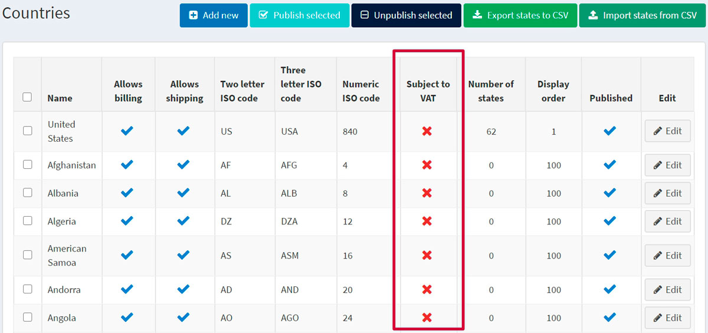
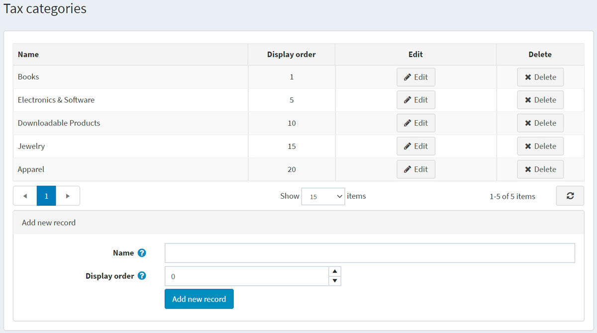
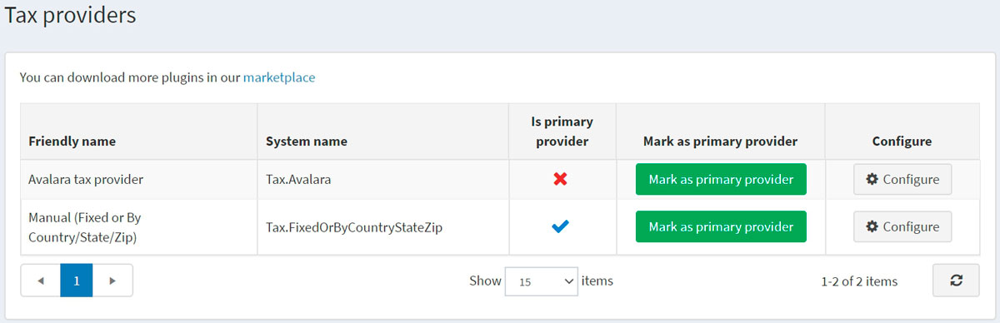
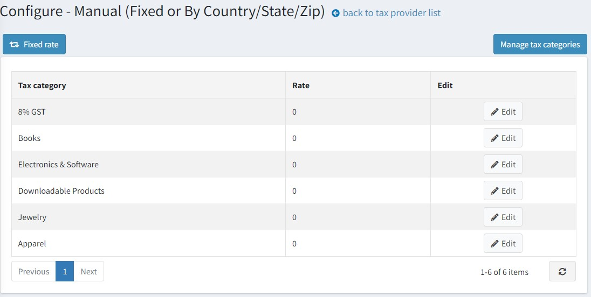
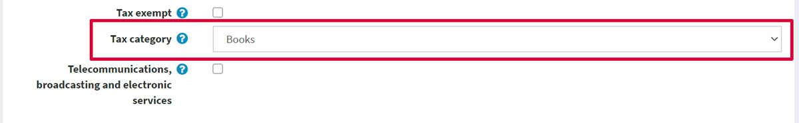

設定稅務
本章節涵蓋 nopCommerce 稅務工具的相關設定。
Note
本章節包含 nopCommerce 內建的稅務工具，不包含第三方稅務服務。
nopCommerce 同時支援外部服務，但這些服務需要從 市集 (Marketplace) 安裝對應的外掛。此類模組的安裝流程詳見 外掛 (Plugins) 章節。
歐盟 VAT 設定指南
若要為位於歐盟的商店設定 nopCommerce 的 VAT（增值稅）支援，請前往 設定 → 設定 → 稅務設定。
在「通用 (Common)」面板中：
- 將 稅務基準 (Tax based on) 設定為 收件地址 (Shipping address)。
在「VAT」面板中：
- 勾選 啟用歐盟 VAT (EU VAT enabled)。這將確保僅針對歐盟境內的貨運收取稅金。
- 選擇您商店所在的 國家/地區 (Country)。
- 若適用，請勾選 允許 VAT 免稅 (Allow VAT exemption)。這將確保您那些位於歐盟境內但不在商店所在國的 VAT 註冊顧客，不會被收取 VAT。
- 勾選 假設 VAT 永遠有效 (Assume VAT always valid) 核取方塊以跳過 VAT 驗證。輸入的 VAT 號碼將被視為永遠有效。提供正確的 VAT 號碼將由顧客自行負責。
- 如果您勾選了 允許 VAT 免稅 (Allow VAT exemption)，那麼您可能也會想要勾選「使用 Web 服務 (Use web service)」和「當提交新的 VAT 號碼時通知管理員 (Notify admin when a new VAT number is submitted)」核取方塊。
點擊 儲存 (Save) 按鈕。
前往 設定 → 國家/地區 (Countries)。請確保所有在 VAT 範圍內的國家/地區，其 須課徵 VAT (Subject to VAT) 屬性都設為 true。

Note
澤西島 (Jersey)、根西島 (Guernsey) 以及其他海峽群島既不屬於英國，也不在 VAT 的適用範圍內。如果您有銷售商品到這些地方，您可能需要進行相關變更。
前往 設定 → 稅務類別 (Tax categories)。

為您所在國家/地區的每一種 VAT 稅率設定一個稅務類別。例如：「標準稅率 (Standard Rate)」、「零稅率 (Zero rate)」、「折扣稅率 (Discounted rate)」。刪除預設存在但不再適用的類別。
前往 設定 → 稅務提供者 (Tax providers)。使用 標記為主要提供者 (Mark as primary provider) 按鈕，將 人工 (固定或按國家/地區/州/郵遞區號) (Manual (fixed or by country/state/zip)) 設定為預設提供者。

點擊 人工 (固定或按國家/地區/州/郵遞區號) (Manual (fixed or by country/state/zip)) 提供者列中的 設定 (Configure) 以編輯稅率。在頁面頂部，您會看到一個按鈕。點擊該按鈕以切換至 固定稅率 (Fixed rate) 模式。

在此頁面上，您可以看到您的 VAT 稅率類別。點擊每個類別旁邊的 編輯 (Edit)，然後輸入百分比稅率。接著點擊 更新 (Update) 按鈕。
請確保所有商品都在其 商品頁面 (product pages) 上指派了稅務類別。
